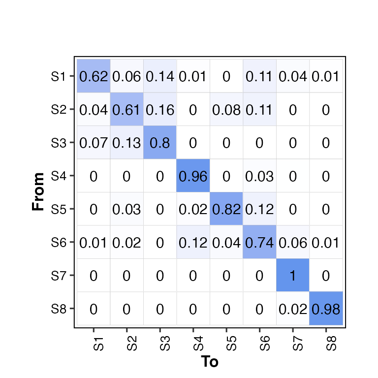

transition2hm()
Adrià Mitjavila Ventura
13 May, 2021
Source:vignettes/02-transition2hm.Rmd
02-transition2hm.RmdDefault transitions from ChromHMM
knitr::include_graphics("../demodata/transitions_8.png")
Run chromHMMviewR
Install and load
# install devtools if not installed
if(!require(devtools)){ install.packages("devtools") }
# install chromHMMviewR if not installed
if(!require(chromHMMviewR)){ devtools::install_github("amitjavilaventura/chromHMMviewR") }
# load chromHMMviewR
library(chromHMMviewR)Read and explore data
# read emissions file from the demodata
transitions <- read.delim("../demodata/transitions_8.txt")
# head
head(transitions)## state..from.to...Emission.order. X1 X2 X3
## 1 1 0.6237799631 5.969936e-02 1.444232e-01
## 2 2 0.0361653826 6.125980e-01 1.588527e-01
## 3 3 0.0667223477 1.305861e-01 7.980450e-01
## 4 4 0.0003346948 5.910215e-05 5.557259e-05
## 5 5 0.0000000000 3.388524e-02 1.394200e-03
## 6 6 0.0098823093 1.613592e-02 3.031194e-05
## X4 X5 X6 X7 X8
## 1 0.014670208 0.000000000 0.1119489415 0.0374990405 0.0079792596
## 2 0.001697886 0.083028122 0.1073994222 0.0002585049 0.0000000000
## 3 0.001039399 0.002886479 0.0002521457 0.0004685915 0.0000000000
## 4 0.963817428 0.001988460 0.0289758412 0.0039176834 0.0008512181
## 5 0.022452888 0.822001613 0.1188773437 0.0013887126 0.0000000000
## 6 0.120611407 0.044797589 0.7424068235 0.0585232267 0.0076124152
Call transition2hm()
Minimum
# set the states with numbers
# states should be named later depending on the results
states <- paste("S", 1:8, sep = "")
# call transition2hm()
transition2hm(data = transitions, states = states)## Loading required package: dplyr##
## Attaching package: 'dplyr'## The following objects are masked from 'package:stats':
##
## filter, lag## The following objects are masked from 'package:base':
##
## intersect, setdiff, setequal, union## Loading required package: magrittr## Loading required package: reshape2## Loading required package: ggplot2## Loading required package: ggpubr## Using State as id variables
From a file
# call transition2hm()
transition2hm(data = "../demodata/transitions_8.txt", states = states)## Using State as id variablesCustomize the output
# change title, subtitle, xlab and ylab
transition2hm(data = transitions, states = states,
title = "This is a title",
subtitle = "This is a subtitle",
xlab = "This is the x-axis title",
ylab = "This is the y-axis title")## Using State as id variables
# change color of the heatmap: color = "gray30"
transition2hm(data = transitions, states = states, color = "gray30")## Using State as id variables
# change the size of the likelihood labels (default: lh_size = 2)
transition2hm(data = transitions, states = states, lh_size = 4)## Using State as id variables
# without likelihood labels: show_lh = F
transition2hm(data = transitions, states = states, show_lh = F)## Using State as id variables